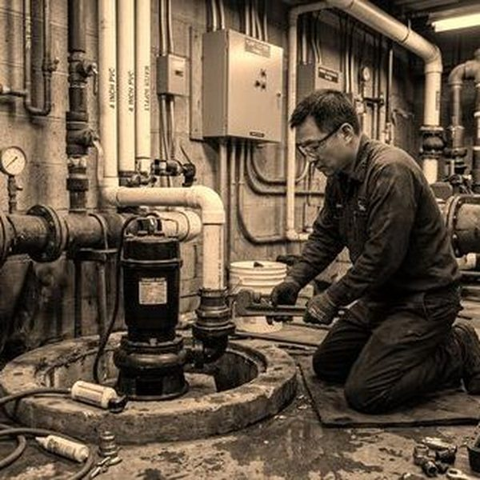
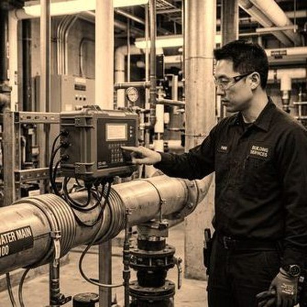
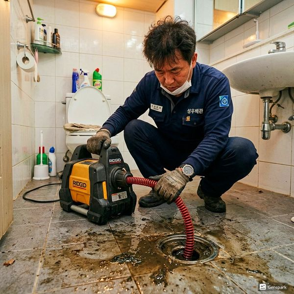

제우스시설관리 | 2025년 4월

일반적으로 주택 종합 보험에는 동파 손해가 포함됩니다. 다만, 관리 부실(보일러 미운영, 보온 조치 미흡)로 인한 동파는 보상에서 제외될 수 있습니다.
✅ 1단계: 즉시 신고 - 보험사에 동파 발생 즉시 신고 (사진 촬영)
✅ 2단계: 응급 조치 - 전문가 진단 및 응급 수리
✅ 3단계: 손해사정 - 보험사 지정 손해사정 전문가 방문
✅ 4단계: 서류 제출 - 수리 견적서, 영수증, 증명사진 등
✅ 5단계: 보상금 지급 - 심사 후 보상금 지급 (1~2주 소요)
보험증권, 신분증, 통장 사본, 수리 견적서, 시공 후 영수증, 동파 전후 사진, 관계자 진단 보고서 등이 필요합니다.
보험에 따라 보상액 한도가 정해져 있습니다. 일반적으로 500만~1000만원 범위 내에서 실제 손해액의 80%를 보상합니다.
겨울철 보일러를 최소 15도 이상 유지하고, 외부 배관에 보온재를 감싸세요. 보일러 점검으로 동파를 사전에 예방하는 것이 최선입니다.
동파는 예방이 최고의 해결책입니다. 만약 동파가 발생했다면 신속한 신고와 정확한 서류 제출로 보험금을 확실히 받으세요.

